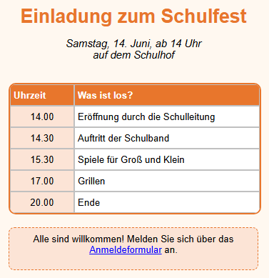

Lernpfad › Lektion 7
Textblöcke

Tabelle oder Textblock?
- Eine Tabelle verwenden Sie für Daten in Zeilen und Spalten.
- Ein Textblock ist ein freies Textfeld, das Sie überall auf der Seite platzieren können: ein Titel, eine kurze Erklärung, eine Bemerkung oder eine Fußzeile.
So machen Sie es selbst
- Erstellen Sie eine Tabelle mit 2 Spalten und 6 Zeilen mit dem Programm (Uhrzeit und Aktivität).
- Die Tabelle muss etwas tiefer auf die Seite, damit Platz für den Titel ist: Halten Sie Strg gedrückt und ziehen Sie
die Tabelle nach unten, oder erhöhen Sie Move Y auf der Registerkarte
 Tabelle (T).
Tabelle (T). - Klicken Sie oberhalb der Tabelle auf die Seite und auf der Registerkarte
 Textblock (B) auf
Textblock (B) auf
 TBA. Ein Textblock erscheint.
TBA. Ein Textblock erscheint. - Doppelklicken Sie auf den Block und geben Sie Einladung zum Schulfest ein. Klicken Sie daneben, um die Eingabe zu beenden.
- Formatieren Sie den Titel: Fett, Zentrieren, Schriftgröße 20 und eine orange Textfarbe. Ziehen Sie die Ecke rechts unten, um den Block so breit wie die Tabelle zu machen.
- Erstellen Sie ebenso einen zweiten Block mit Datum und Ort und einen dritten Block unter der Tabelle.
- Geben Sie dem unteren Block einen Rahmen: Schalten Sie Transparent aus, wählen Sie eine helle Farbe des Textblocks und wählen Sie als Rahmenstil gestrichelt.
Ein Link in einem Textblock
In einem Textblock kann ein einzelnes Wort oder ein Stück Text ein Link sein. Doppelklicken Sie auf den Block, markieren Sie das
Stück Text (im Beispiel Anmeldeformular) und klicken Sie auf der Registerkarte Textblock auf
 HL+. Geben Sie die Adresse ein. So können Sie auch ein einzelnes Wort fett
oder kursiv machen: Markieren Sie es und klicken Sie auf Fett oder Kursiv.
HL+. Geben Sie die Adresse ein. So können Sie auch ein einzelnes Wort fett
oder kursiv machen: Markieren Sie es und klicken Sie auf Fett oder Kursiv.
Aufgabe
Setzen Sie rechts neben die Tabelle einen neuen Textblock mit dem Text Eintritt frei! in Rot und fett, mit einem gepunkteten Rahmen. Verschieben Sie ihn danach mit Move X und Move Y, bis er schön neben der Tabelle steht.
Lösung
Klicken Sie rechts neben die Tabelle und auf TBA. Doppelklicken Sie, geben Sie den Text ein und klicken Sie daneben. Klicken Sie auf Fett, wählen Sie eine rote Textfarbe, schalten Sie Transparent aus und wählen Sie als Rahmenstil gepunktet. Passen Sie Move X und Move Y an, bis der Block an der richtigen Stelle steht. Prüfen Sie im Test-Browser, ob er dort genauso aussieht.
Arbeiten Sie unter Linux? Öffnen Sie das Beispiel dann selbst mit Tabellendesigner öffnen: Ordner
lessen/de, Datei les07-uitnodiging.htd.